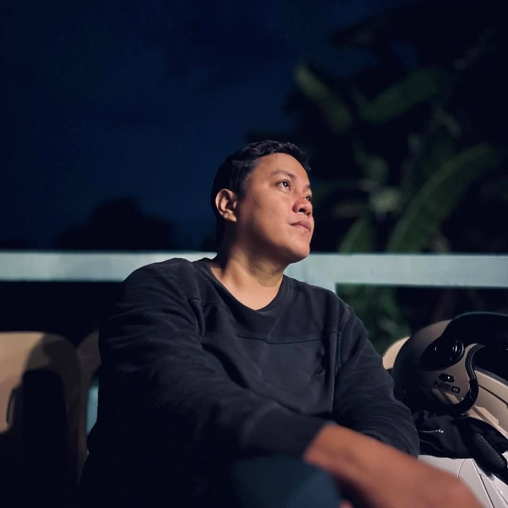

About
I have spent more than eight years designing, developing and maintaining software for healthcare, education, logistics and operations management. I like picking up a complex business application, finding out how it really works, and making it easier to maintain.
My background covers object-oriented design, database architecture, REST APIs, Linux server administration and legacy system upgrades. I work comfortably with distributed international teams and have led projects from architecture through deployment.
- Name
- Rafael Gustavo Mirasol
- Title
- Senior Software Engineer
- Based in
- Carmen, Cagayan de Oro, Philippines 9000
- rafaelmirasol.1986@gmail.com
- Phone
- +63 997 183 3289
- Education
- BS in Information Technology, STI College CDO, 2018
What I do
Web Developer
Web Designer
Software Developer
Agentic AI Engineer
Automation Engineer
Experience
- 2018 – 2021
IT Instructor / IT Lecturer
Informatics Computer Institute, Cagayan de Oro, Philippines- Taught a wide range of IT subjects to college students and Senior High School (Grade 11 and 12) students specializing in ICT, covering both theory and hands-on learning.
- Delivered lessons in programming, computer systems, networking, database management and basic web development tailored to students’ skill levels.
- Designed engaging learning materials and practical exercises to improve understanding and industry readiness.
- Provided academic support and mentorship on capstone projects, technical assignments and ICT specialization tracks.
- 2021 – 2022
Application Developer
Cerebro Diagnostic Center, Cagayan de Oro, Philippines- Developed and maintained in-house Time Tracking and Salary Management applications to streamline employee attendance and payroll.
- Provided technical support and enhancements for the hospital’s existing information system, keeping it running and adapting features to changing requirements.
- Implemented Git version control to manage codebase changes, support collaboration and keep production deployments stable.
- Worked closely with administrative and medical staff to gather requirements, resolve issues and improve the user experience of internal applications.
- Maintained and enhanced internal applications built in Delphi, including troubleshooting code, implementing feature updates and supporting business operations.
- 2022 – 2026
Senior Software Engineer
Unixsurplus Inc., California, USA- Led the architecture, development and maintenance of a cross-regional Time Tracking System supporting both Philippine and U.S.-based operations.
- Designed and implemented scalable backend services using Laravel, FastAPI, Python and MySQL.
- Developed and maintained RESTful APIs consumed by web and desktop applications.
- Engineered an automated hard drive testing, grading and inventory processing platform that significantly reduced manual intervention and increased operational throughput.
- Built hardware validation and diagnostic automation tools using Python, Linux utilities and shell scripting.
- Refactored and modernized legacy applications, improving maintainability, scalability and long-term supportability.
- Designed and optimized database schemas, queries and reporting systems for high-volume operational data.
- Implemented CI/CD pipelines using Bitbucket Pipelines, improving deployment reliability and release consistency.
- Developed offline-capable applications using IndexedDB and synchronization mechanisms.
- Managed Linux-based servers and automated recurring operational tasks through shell scripting and cron jobs.
- Participated in AWS-based infrastructure integration and deployment initiatives.
- Worked closely with cross-functional teams and stakeholders across multiple regions to gather requirements, troubleshoot issues and deliver solutions aligned with business objectives.
- Mentored junior developers and contributed to software engineering best practices and code review processes.
- 2024 – 2025
Part-time IT Instructor
STI College CDO, Cagayan de Oro, Philippines- Delivered lectures and hands-on training on core IT subjects including Mobile App Development, Web Development and Programming Fundamentals.
- Taught programming languages such as Java, Python and JavaScript, focusing on both theoretical concepts and practical application.
- Guided students through building real-world projects using modern frameworks and tools in mobile and web development.
- Provided mentorship and support on coding best practices, debugging techniques and software development methodologies.
Selected work
Cross-regional Time Tracking System
Architecture and ongoing development of a system used by teams in both the Philippines and the U.S., backed by Laravel, FastAPI and MySQL.
Hard drive testing and grading platform
End-to-end automation that tests and grades drives and processes inventory with Python and Linux tooling.
Offline-capable applications
Apps that keep working without a connection, using IndexedDB and synchronization once the network returns.
Legacy modernization
Refactoring older systems, including Delphi applications, so they are easier to maintain, scale and support.
Payroll and attendance tools
Time Tracking and Salary Management applications for a diagnostic center.
Skills
Languages
Frameworks
Databases
DevOps
Monitoring
Engineering
Education: BS in Information Technology, STI College CDO, 2018. Tools: Git, VS Code, MySQL Workbench, Postman.
Contact
rafaelmirasol.1986@gmail.com- +63 997 183 3289
- Carmen, Cagayan de Oro, Philippines 9000